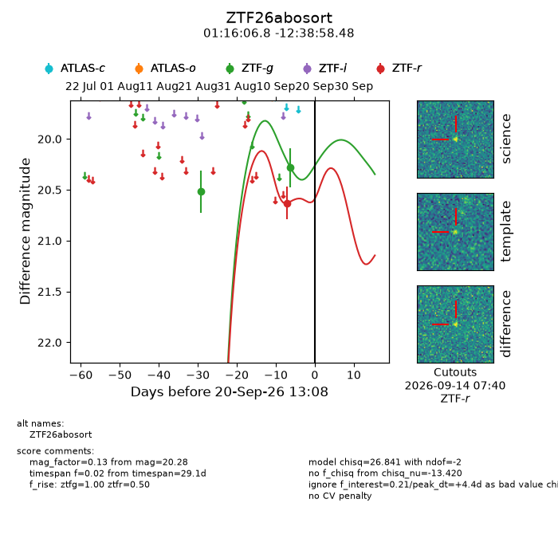
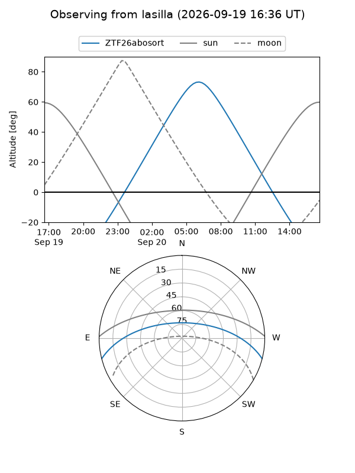
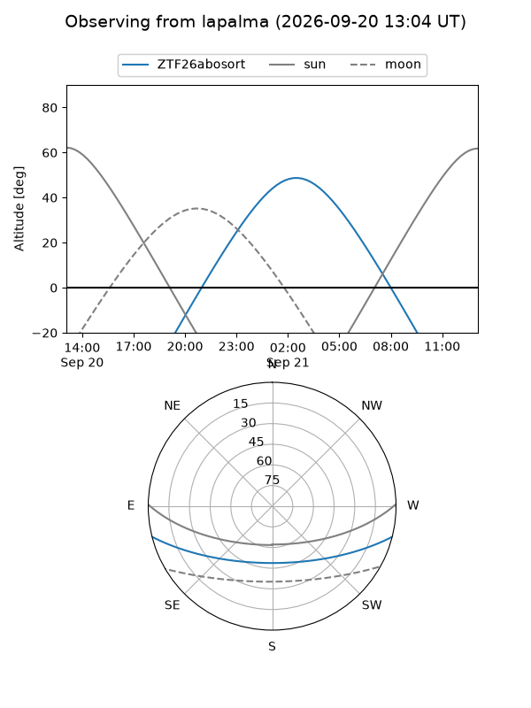
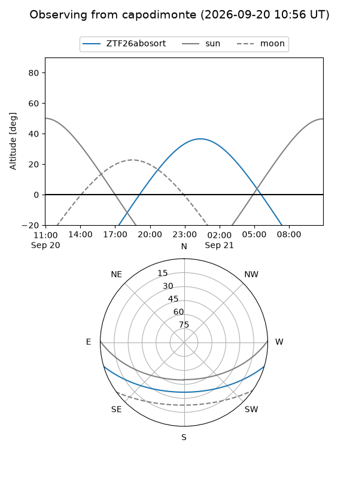
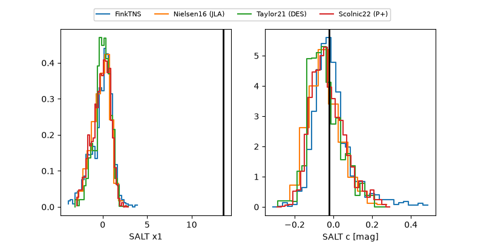

ZTF26abosort
Target ZTF26abosort at 2026-09-20 13:10
Aliases and brokers:
FINK-ZTF: ztf.fink-portal.org/ZTF26abosort
Lasair-ZTF: lasair-ztf.lsst.ac.uk/objects/ZTF26abosort
ALeRCE-ZTF: alerce.online/object/ZTF26abosort
Direct TNS query: direct search
alt names
ZTF26abosort (ztf,fink_ztf)
Coordinates:
equatorial (ra, dec) = 19.0282,-12.64958
equatorial (HMS+DMS) = 01:16:06.77,-12:38:58.48
galactic (l, b) = (145.8956,-74.41067)
Flags:
peak dt: +4.4
Photometry:
last ztfg=20.28, ztfr=20.63
2 ztfg, 1 ztfr detections
Lightcurve

Visibility



Additional plots
